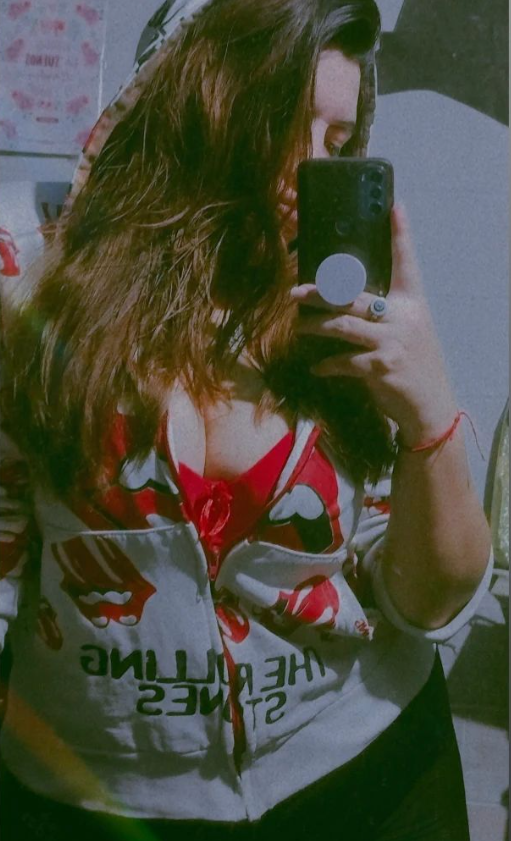

Soy una desarrolladora web Frontend y Diseñadora UX/UI con background en Producción Audiovisual y Diseño de Modas. Tengo experiencia en la creación de interfaces de usuario atractivas y funcionales. Mi enfoque se centra en utilizar tecnologías modernas para desarrollar experiencias web intuitivas y de alto rendimiento. Con habilidades en HTML, CSS, JavaScript y varios frameworks como React, Redux y Next.js, estoy comprometida a crear aplicaciones web de calidad que cumplan con los estándares más exigentes de usabilidad y diseño. Cuento con habilidades en metodologías agiles y GIT. He trabajado en proyectos individuales y grupales, lo que me ha ayudado a desarrollar habilidades blandas como buena comunicación, trabajo en equipo y adaptabilidad, así también resolución de problemas.
⬎Toca la imagen de aquí
